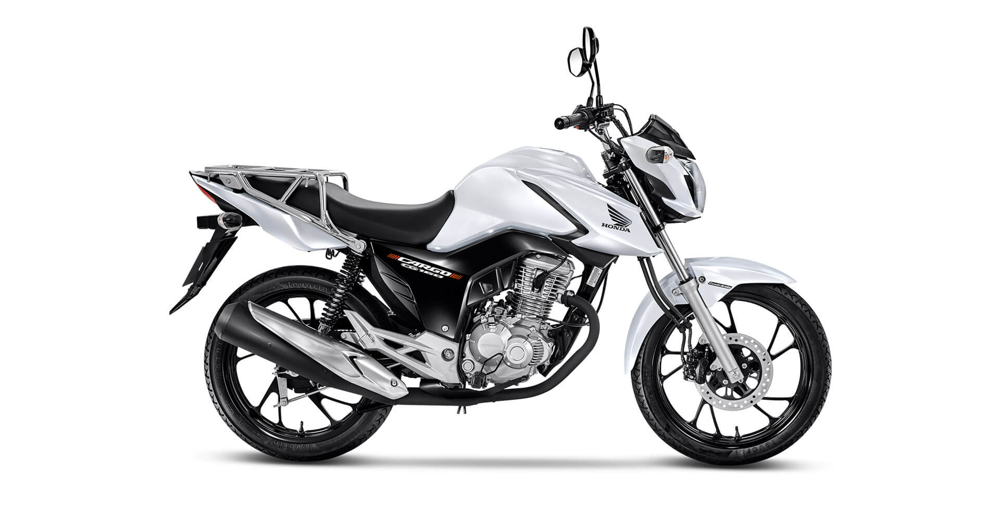

Honda 160 motos
- Titan 160
- Fan 160
- Start 160
- Cargo 160
motos para seu cotidiano
 A alma da CG Cargo é o motor 160cc, que oferece alto rendimento, grande economia e a possibilidade de optar entre etanol ou gasolina na hora de abastecer.
Homologada para uso profissional, a CG 160 Cargo é certamente a melhor escolha para quem precisa trabalhar com moto.
start 160 fan 160
=